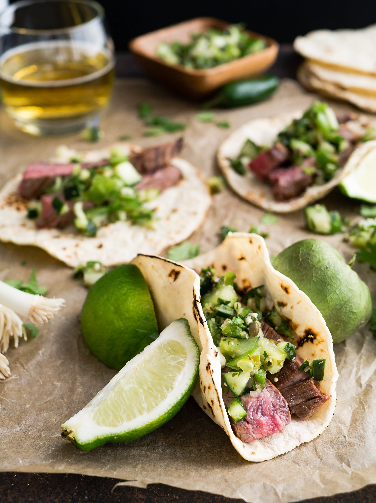

De La Flor
Flor de Locoro, Arroz Blanco, y Frijoles Fritos Pintos.

Tacos
Carne de Asada tacos con opciones de chile verde e rojo con verdura.

Nachos Jaliscense's
Red chile carne asada nachos with white maiz tortilla chips.

Sopes
Sopes chicos con arroz mexicano.